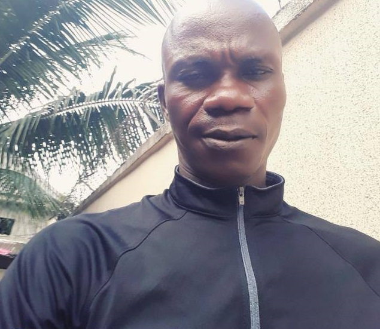

Engr. Ime Isaiah Obot
A man after God's heart

Engr. Ime Isaiah Etok was the Sectional Head,
Department of Heavy Duty, Alcon Nigerian Limited, Port-Harcourt.
OUR SUPERHERO
Here is the timeline of Engr. Ime Isaiah Etok's life
- 1977 - Born in Ikot Udo Abia.
- 1980 - Saint Martins U.N.A Primary School, Ikot Udo Abia, Etinan Local Government Area for his first school leaving certificate.
- 1981 - He attended Qua Iboe Church, Ikot Udo Abia, Etinan Superintendency with his parents who were both Elder and Deaconess respectively.He followed the footprint of his mother, Dec. Unwa Udoudo Ibio of Nung Utin Akpan Ekpo of Ikot Udo Oto, Etinan.
- 1987 - He attended Community Secondary School , Asuna in Etinan. Where he obtained his Secondary School Sertificate.
- 1994 - He took Trade Test 1, 2 and 3 at Slawd Peters, Etinan.
- 1995 - He got married to his best friend from childhood, Miss Esther Aniefiok Daniel of Ikot Ekpok Nung Ikon of Ikot Ananga in Etinan.
- 1996 - He attended Petroleum Training Institution (PTI) and underwent several professional trainings including fire fighting and other safety trainings to qualify him for work in the Petroleum engineering field where he worked.
- 2000 - He started working at Wil-Bros Nigerian Limited, Port-Harcourt until 2011 where he resigned and joined his former boss in another company.
- 2012 - He worked at Alcon Nigeria Limited, Port-Harcourt as the Sectional Head, Department of Heavy Duty, the post he held until his demise.
- 2018 - He was called to Glory.
Tribute
I still refuse to believe that you are no longer in this world.. You have created void that can't be filled. Your support has been immense. No one dared to fight or bully us.. Your bravery was immeasurable.. Your smiles brightened the day! You will forever be remembered.- Dearest Uncle
The entire world needs to read about this great man. To know more, please click here